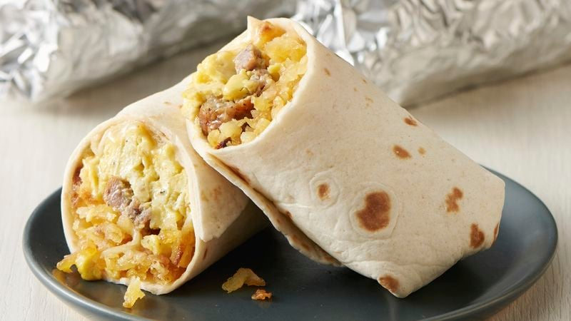

Breakfast Burrito

Description
Breakfast burritos are a great way to start the day! It has brown rice for carbs and fiber, scrambled eggs for
protein and omega-3s, and cheese and hot sauce for flavor. It's simple, easy to make, and provides a nutritious
kickstart to your energy.
Ingredients
- one cup of brown rice (uncooked)
- six large eggs
- one large tortilla
- one cup of shredded cheese
- hot sauce to taste
Instructions
- Cook the brown rice according to the instructions on the package.
- Scramble the eggs in a pan over medium heat.
- Spread cheese evenly on top of tortilla and microwave for 1 min
- Place the cooked rice, scrambled eggs, and hot sauce on the tortilla and wrap into burrito
- Store leftover eggs and rice in the fridge; can be combined with cheese in step 3 and collectively reheated
for ~90 seconds to skip cooking altogether for a few days.